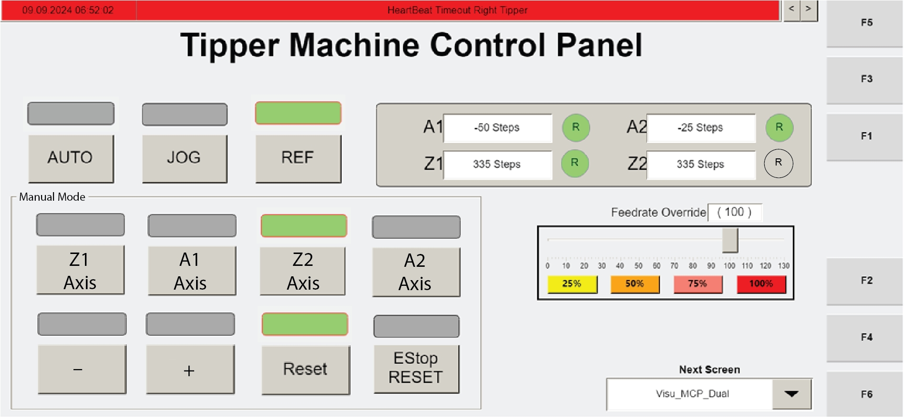

| Procedure ID | proc_manually_reference_tipper_axes_visu_dual_mcp_v1 |
|---|---|
| Title | Manually Reference Tipper Axes Using Operator Station HMI (Visu_Dual_MCP) |
| Procedure Type | operation |
| Primary Role | operator |
| Support Safe | Yes |
| Capability Tags | tipper_station_fault |
| Access Surface | tipper_hmi |
| Audience Roles | operator |
| Failure Pattern Tags | None |
| Validation Status | needs_sme_review |
| Merge Status | source_finalized |
Use the operator station HMI to stop the automatic tipping cycle, open the reference screen, and manually reference the required tipper axis(es) when the circled 'R' indicator shows they need referencing.
When maintenance requires manually referencing the tipper axis(es) using the operator station HMI reference screen (Visu_Dual_MCP).

Responsible role: operator
Instruction:
On the operator station HMI, navigate to the "Visu_Dual_MCP" screen (F3).
Expected result:
The operator station HMI displays the "Visu_Dual_MCP" screen (F3) with the tipping cycle controls available.
Responsible role: operator
Instruction:
Press "CYCLE STOP" to stop the automatic tipping cycle.
Expected result:
The automatic tipping cycle is stopped (CYCLE STOP is pressed while in Auto tipping cycle context).
Responsible role: operator
Instruction:
Press "REF" to open the reference screen.
Expected result:
The reference screen opens.
Stop or Escalate If:
Responsible role: operator
Instruction:
On the reference screen, check the circled 'R' indicator next to the axis information. If the circled 'R' is clear, that axis needs to be referenced. Select the axis to be referenced.
Expected result:
The circled 'R' status is visible next to axis information, and the axis requiring referencing is selected.
Stop or Escalate If:
Responsible role: operator
Instruction:
Press the '-' button to start the movement of the selected axis.
Expected result:
Pressing '-' starts movement of the selected axis for referencing.
Stop or Escalate If: